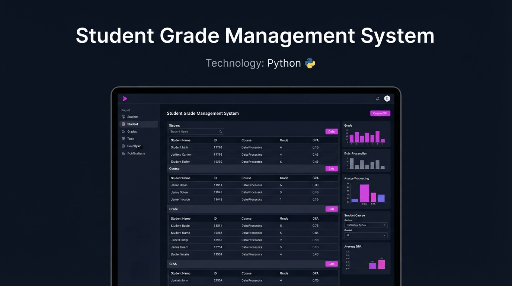
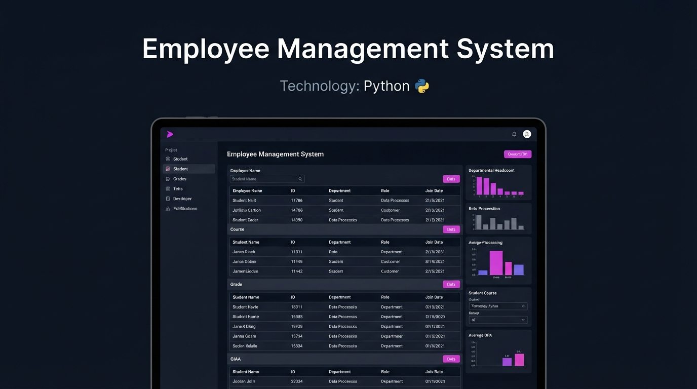
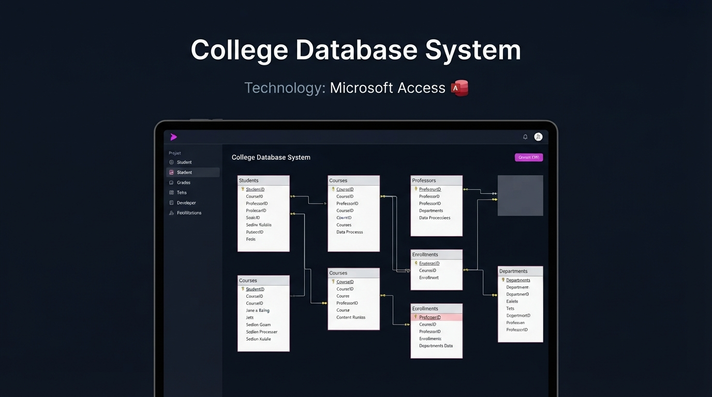

DATA ENGINEER
Hi, I'm Amany Mustafa

I am a Data Engineer with a strong interest in building reliable data solutions and working with data throughout its lifecycle.
I enjoy working with data and understanding how raw information can be organized, transformed, and prepared for real-world use. My technical experience includes using Python and Pandas for data manipulation and cleaning, SQL for querying relational databases, and applying foundational ETL concepts for data preparation and transformation. I also have hands-on experience with database design using Microsoft Access and am developing my knowledge of Microsoft Azure and data engineering workflows.
Cleaning and organizing datasets using Python and Pandas, including handling missing values, duplicates, and inconsistent data.
Working with relational databases and writing SQL queries for data retrieval, filtering, transformation, and analysis.
Preparing and transforming raw data using foundational ETL concepts to create clean and structured datasets.

A Python-based system for managing student information and organizing student grades. The project demonstrates practical use of Python programming concepts for handling and processing student-related data.

A Python-based project for managing employee information and performing basic employee-related operations. The project demonstrates structured programming and data handling concepts.

A database project developed using Microsoft Access to organize college-related information. The project demonstrates database design and relational data management fundamentals.
Faculty of Computers and Information
Bachelor's Degree
Expected Graduation: 2027AI & Data Science — Microsoft Data Engineer Program
Training in Python, SQL, databases, ETL, data engineering fundamentals, and Microsoft Azure.